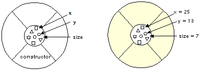
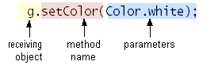

Feedback Form
|
|
Start of Tutorial > Start of Trail > Start of Lesson |
Search
Feedback Form |
Now that you have a conceptual understanding of object-oriented programming let's look at how these concepts get translated into code.Here is an applet
named
ClickMe. A red spot appears when you click the mouse within the applet's bounds.
Note: The above applet requires JDK 1.1. If you are using an older browser that does not support 1.1, you won't be able to run the applet. Instead, you need to view this page in a 1.1 browser, such as HotJava, the JDK Applet Viewer (appletviewer), or certain versions of Netscape Navigator and Internet Explorer. For more information about running applets, refer to About Our Examples.The
ClickMeapplet is a relatively simple program and the code for it is short. However, if you don't have much experience with programming, you might find the code daunting. We don't expect you to understand everything in this program right away, and this section won't explain every detail. The intent is to expose you to some source code and to associate it with the concepts and terminology you just learned. You will learn the details in later trails.
To compile this applet you need two source files:ClickMe.javaand
Spot.javaThen load the page into your browser or the appletviewer tool. Make sure all the necessary files are in the same directory.<applet code="ClickMe.class" width="300" height="150"> </applet>
Many objects play a part in this applet. The two most obvious ones are the ones you can see: the applet itself and the spot, which is red on-screen.The browser creates the applet object when it encounters the applet tag in the HTML code containing the applet. The applet tag provides the name of the class from which to create the applet object. In this case, the class name is
ClickMe..The
ClickMe.applet in turn creates an object to represent the spot on the screen. Every time you click the mouse in the applet, the applet moves the spot by changing the object'sxandylocation and repainting itself. The spot does not draw itself; the applet draws the spot, based on information contained within the spot object.Besides these two obvious objects, other, nonvisible objects play a part in this applet. Three objects represent the three colors used in the applet (black, white, and red); an event object represents the user action of clicking the mouse, and so on.
Because the object that represents the spot on the screen is very simple, let's look at its class, namedSpot. It declares three instance variables:sizecontains the spot's radius,xcontains the spot's current horizontal location, andycontains the spot's current vertical location:Additionally, the class has a constructorpublic class Spot { //instance variables public int size; public int x, y; //constructor public Spot(int intSize) { size = intSize; x = -1; y = -1; } }sizeis provided as an argument to the constructor by the caller. Thexandyvariables are set to -1 indicating that the spot is not on-screen when the applet starts up.The applet creates a new spot object when the applet is initialized. Here's the relevant code from the applet class:
The first line shown declares a variable namedprivate Spot spot = null; private static final int RADIUS = 7; ... spot = new Spot(RADIUS);spotwhose data type isSpot, the class from which the object is created, and initializes the variable tonull. The second line declares an integer variable namedRADIUSwhose value is7. Finally, the last line shown creates the object;newallocates memory space for the object.Spot(RADIUS)calls the constructor you saw previously and passes in the value ofRADIUS. Thus the spot object'ssizeis set to 7 The figure on the left is a representation of theSpotclass. The figure on the right is a spot object.
As you know, object A can use a message to request that object B do something, and a message has three components:Here are two lines of code from the
- The object to which the message is addressed
- The name of the method to perform
- Any parameters the method needs
ClickMeapplet:Both are messages from the applet to an object namedg.setColor(Color.white); g.fillRect(0, 0, getSize().width - 1, getSize().height - 1);g--aGraphicsobject that knows how to draw simple on-screen shapes and text. This object is provided to the applet when the browser instructs the applet to draw itself. The first line sets the color to white; the second fills a rectangle the size of the applet, thus painting the extent of the applet's area white.The following figure highlights each message component in the first message:

To run in a browser, an object must be an applet. This means that the object must be an instance of a class that derives from theAppletclass provided by the Java platform.The
ClickMeapplet object is an instance of theClickMeclass, which is declared like this:Thepublic class ClickMe extends Applet implements MouseListener { ... }extends Appletclause makesClickMea subclass ofApplet.ClickMeinherits a lot of capability from its superclass, including the ability to be initialized, started, and stopped by the browser, to draw within an area on a browser page, and to register to receive mouse events. Along with these benefits, theClickMeclass has certain obligations: its painting code must be in a method calledpaint, its initialization code must be in a method calledinit, and so on.public void init() { ... // ClickMe's initialization code here } public void paint(Graphics g) { ... // ClickMe's painting code here }
TheClickMeapplet responds to mouse clicks by displaying a red spot at the click location. If an object wants to be notified of mouse clicks, the Java platform event system requires that the object implement theMouseListenerinterface. The object must also register as a mouse listener.The
MouseListenerinterface declares five different methods each of which is called for a different kind of mouse event: when the mouse is clicked, when the mouse moves outside of the applet, and so on. Even though the applet is interested only in mouse clicks it must implement all five methods. The methods for the events that it isn't interested in are empty.The complete code for the
ClickMeapplet is shown below. The code that participates in mouse event handling is red:import java.applet.Applet; import java.awt.*; import java.awt.event.*; public class ClickMe extends Applet implements MouseListener { private Spot spot = null; private static final int RADIUS = 7; public void init() { addMouseListener(this); } public void paint(Graphics g) { // draw a black border and a white background g.setColor(Color.white); g.fillRect(0, 0, getSize().width - 1, getSize().height - 1); g.setColor(Color.black); g.drawRect(0, 0, getSize().width - 1, getSize().height - 1); // draw the spot g.setColor(Color.red); if (spot != null) { g.fillOval(spot.x - RADIUS, spot.y - RADIUS, RADIUS * 2, RADIUS * 2); } } public void mousePressed(MouseEvent event) { if (spot == null) { spot = new Spot(RADIUS); } spot.x = event.getX(); spot.y = event.getY(); repaint(); } public void mouseClicked(MouseEvent event) {} public void mouseReleased(MouseEvent event) {} public void mouseEntered(MouseEvent event) {} public void mouseExited(MouseEvent event) {} }
ClickMe applet inherits a lot of capability from its superclass. To learn more about how ClickMe works, you need to learn about its superclass, Applet. How do you find that information? You can find detailed descriptions of every class in the API documentation, which constitute the specification for the classes that make up the Java platform.
The API documentation for the Java 2 Platform is online at java.sun.com. It's helpful to have the API documentation for all releases you use bookmarked in your browser.
To learn more about all the classes and interfaces from the Java platform used by the ClickMe applet, you can look at the API documentation for these classes:
java.applet.Appletjava.awt.Graphicsjava.awt.Colorjava.awt.event.MouseListenerjava.awt.event.MouseEventThis discussion glossed over many details and left some things unexplained, but you should have some understanding now of what object-oriented concepts look like in code. You should now have a general understanding of the following:
- That a class is a prototype for objects
- That objects are created from classes
- That an object's class is its type
- How to create an object from a class
- What constructors are
- How to initialize objects
- What the code for a class looks like
- What class variables and methods are
- What instance variables and methods are
- How to find out what a class's superclass is
- That an interface is a protocol of behavior
- What it means to implement an interface
|
|
Start of Tutorial > Start of Trail > Start of Lesson |
Search
Feedback Form |